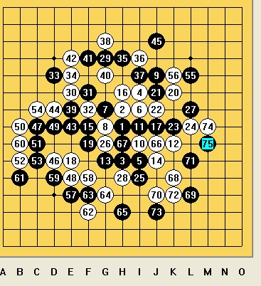

[棋局点评]我的冠军之路——08上海联赛A组自战解说
#1 [棋局点评]我的冠军之路——08上海联赛A组自战解说 作者：茗弈小刀 发表时间：2009-1-19 11:32:13
回想起这次的比赛，心里真的有了很多感慨。由于个人原因， 06 、 07 整整两年的时间，我虽然大大小小的比赛也参加了一些，但实际上一直没有进行系统的练棋，基本处于半隐退状态，对棋的感觉比以前生疏了不少。今年由于需要打联赛 A 组，对手个个实力强劲，我不得不重新打起以前下棋时的那股疯狂劲。毕竟我想既然已经决定了参赛，就认真把每一盘棋下好，不要逢场作戏。
Round 1 ：陈文夏 0.5:0.5 蔡力捷 不换 5A=10
（说明：左侧是最终执黑的一方，右侧是最终执白方，以下同）

陈文夏（魔法少年）是我多年的棋友，回想在
03
#2 Re:我的冠军之路——08上海联赛A组自战解说 作者：雅典娜 发表时间：2009-1-19 12:41:41
 先支持一下!
先支持一下!